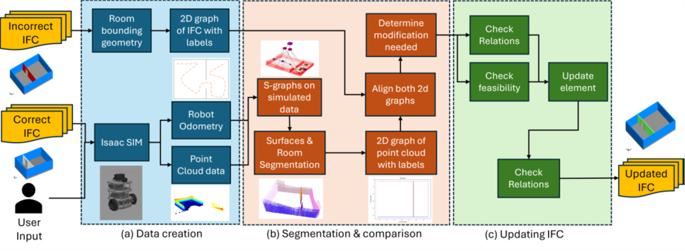
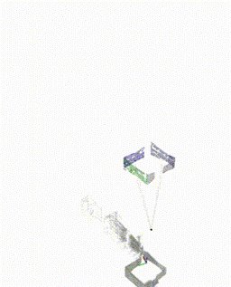

LiDAR-based 2D plan generation
Simulated LiDAR sweep producing building-floor layouts.
Generated building-scale point-cloud data with simulated LiDAR in NVIDIA Isaac Sim and performed room- and floor-level semantic segmentation; validated end-to-end in ROS / RViz with reproducible single-command pipelines.
Simulated LiDAR sweep producing building-floor layouts.


